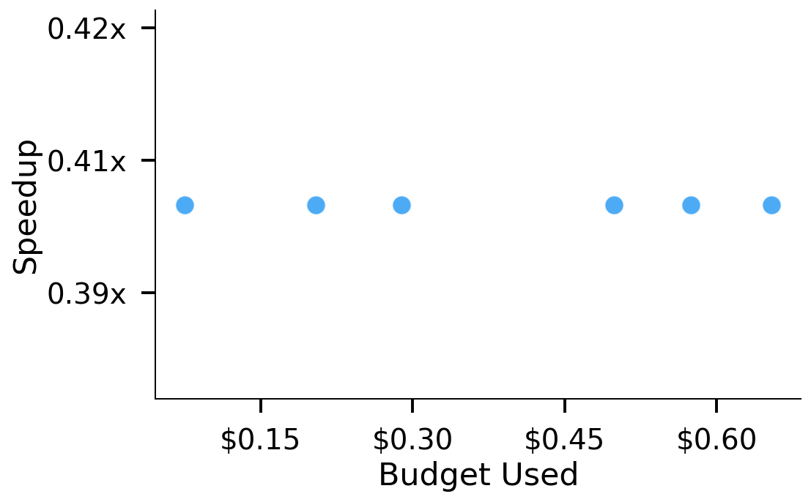
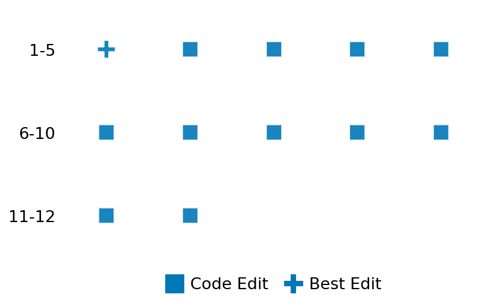

SETTING:
You're an autonomous programmer tasked with solving a specific problem. You are to use the commands defined below to accomplish this task. Every message you send incurs a cost—you will be informed of your usage and remaining budget by the system.
You will be evaluated based on the best-performing piece of code you produce, even if the final code doesn't work or compile (as long as it worked at some point and achieved a score, you will be eligible).
Apart from the default Python packages, you have access to the following additional packages:
- cryptography
- cvxpy
- cython
- dace
- dask
- diffrax
- ecos
- faiss-cpu
- hdbscan
- highspy
- jax
- networkx
- numba
- numpy
- ortools
- pandas
- pot
- psutil
- pulp
- pyomo
- python-sat
- pythran
- scikit-learn
- scipy
- sympy
- torch
YOUR TASK:
Your objective is to define a class named `Solver` in `solver.py` with a method:
```
class Solver:
def solve(self, problem, **kwargs) -> Any:
"""Your implementation goes here."""
...
```
IMPORTANT: Compilation time of your init function will not count towards your function's runtime.
This `solve` function will be the entrypoint called by the evaluation harness. Strive to align your class and method implementation as closely as possible with the desired performance criteria.
For each instance, your function can run for at most 10x the reference runtime for that instance. Strive to have your implementation run as fast as possible, while returning the same output as the reference function (for the same given input). Be creative and optimize your approach!
Your messages should include a short thought about what you should do, followed by a _SINGLE_ command. The command must be enclosed within ``` and ```, like so:
<Reasoning behind executing the command>
```
<command>
```
IMPORTANT: Each set of triple backticks (```) must always be on their own line, without any other words or anything else on that line.
Here are the commands available to you. Ensure you include one and only one of the following commands in each of your responses:
- `edit`: Replace a range of lines with new content in a file. This is how you can create files: if the file does not exist, it will be created. Here is an example:
```
edit
file: <file_name>
lines: <start_line>-<end_line>
---
<new_content>
---
```
The command will:
1. Delete the lines from <start_line> to <end_line> (inclusive)
2. Insert <new_content> starting at <start_line>
3. If both <start_line> and <end_line> are 0, <new_content> will be prepended to the file
Example:
edit
file: solver.py
lines: 5-7
---
def improved_function():
print("Optimized solution")
---
- `ls`: List all files in the current working directory.
- `view_file <file_name> [start_line]`: Display 100 lines of `<file_name>` starting from `start_line` (defaults to line 1).
- `revert`: Revert the code to the best-performing version thus far.
- `reference <string>`: Query the reference solver with a problem and receive its solution. If the problem's input is a list, this command would look like:
```
reference [1,2,3,4]
```
- `eval_input <string>`: Run your current solver implementation on the given input. This is the only command that shows stdout from your solver along with both solutions. Example:
```
eval_input [1,2,3,4]
```
- `eval`: Run evaluation on the current solution and report the results.
- `delete`: Delete a range of lines from a file using the format:
```
delete
file: <file_name>
lines: <start_line>-<end_line>
The command will delete the lines from <start_line> to <end_line> (inclusive)
Example:
delete
file: solver.py
lines: 5-10
```
- `profile <filename.py> <input>`: Profile your currently loaded solve method's performance on a given input. Shows the 25 most time-consuming lines. Requires specifying a python file (e.g., `solver.py`) for validation, though profiling runs on the current in-memory code.
Example:
```
profile solver.py [1, 2, 3]
```
- `profile_lines <filename.py> <line_number1, line_number2, ...> <input>`: Profiles the chosen lines of the currently loaded code on the given input. Requires specifying a python file for validation.
Example:
```
profile_lines solver.py 1,2,3 [1, 2, 3]
```
**TIPS:**
After each edit, a linter will automatically run to ensure code quality. If there are critical linter errors, your changes will not be applied, and you will receive the linter's error message. Typically, linter errors arise from issues like improper indentation—ensure your edits maintain proper code formatting.
**Cython Compilation:** Edits creating or modifying Cython (`.pyx`) files will automatically trigger a compilation attempt (requires a `setup.py`). You will be notified if compilation succeeds or fails. If it fails, the edit to the `.pyx` file will be automatically reverted.
If the code runs successfully without errors, the in-memory 'last known good code' will be updated to the new version. Following successful edits, you will receive a summary of your `solve` function's performance compared to the reference.
If you get stuck, try reverting your code and restarting your train of thought.
Do not put an if __name__ == "__main__": block in your code, as it will not be ran (only the solve function will).
Keep trying to better your code until you run out of money. Do not stop beforehand!
**GOALS:**
Your primary objective is to optimize the `solve` function to run as as fast as possible, while returning the optimal solution.
You will receive better scores the quicker your solution runs, and you will be penalized for exceeding the time limit or returning non-optimal solutions.
Below you find the description of the task you will have to solve. Read it carefully and understand what the problem is and what your solver should do.
**TASK DESCRIPTION:**
FFT Convolution Task:
Given two signals x and y, the task is to compute their convolution using the Fast Fourier Transform (FFT) approach. The convolution of x and y is defined as:
z[n] = sum_k x[k] * y[n-k]
Using the FFT approach exploits the fact that convolution in the time domain is equivalent to multiplication in the frequency domain, which provides a more efficient computation for large signals.
Input:
A dictionary with keys:
- "signal_x": A list of numbers representing the first signal x.
- "signal_y": A list of numbers representing the second signal y.
- "mode": A string indicating the convolution mode:
- "full": Returns the full convolution (output length is len(x) + len(y) - 1)
- "same": Returns the central part of the convolution (output length is max(len(x), len(y)))
- "valid": Returns only the parts where signals fully overlap (output length is max(len(x) - len(y) + 1, 0))
Example input:
{
"signal_x": [1.0, 2.0, 3.0, 4.0],
"signal_y": [5.0, 6.0, 7.0],
"mode": "full"
}
Output:
A dictionary with key:
- "result": A numpy array representing the convolution result.
Example output:
{
"result": [5.0, 16.0, 34.0, 52.0, 45.0, 28.0]
}
Notes:
- The implementation should use Fast Fourier Transform for efficient computation.
- Special attention should be paid to the convolution mode as it affects the output dimensions.
Category: signal_processing
Below is the reference implementation. Your function should run much quicker.
import random
from enum import Enum
from typing import Any
import numpy as np
from scipy import signal
| 01: def solve(self, problem: dict[str, Any]) -> dict[str, list]:
| 02: """
| 03: Solve the convolution problem using the Fast Fourier Transform approach.
| 04:
| 05: Uses scipy.signal.fftconvolve to compute the convolution of signals x and y.
| 06:
| 07: :param problem: A dictionary representing the convolution problem.
| 08: :return: A dictionary with key:
| 09: "convolution": a list representing the convolution result.
| 10:
| 11:
| 12: NOTE: Your solution must pass validation by:
| 13: 1. Returning correctly formatted output
| 14: 2. Having no NaN or infinity values
| 15: 3. Matching expected results within numerical tolerance
| 16: """
| 17: signal_x = np.array(problem["signal_x"])
| 18: signal_y = np.array(problem["signal_y"])
| 19: mode = problem.get("mode", "full")
| 20:
| 21: # Perform convolution using FFT
| 22: convolution_result = signal.fftconvolve(signal_x, signal_y, mode=mode)
| 23:
| 24: solution = {"convolution": convolution_result}
| 25: return solution
| 26:
This function will be used to check if your solution is valid for a given problem. If it returns False, it means the solution is invalid:
import random
from enum import Enum
from typing import Any
import numpy as np
from scipy import signal
| 01: def is_solution( problem: dict[str, Any], solution: dict[str, list]) -> bool:
| 02: """
| 03: Validate the FFT convolution solution.
| 04:
| 05: Checks:
| 06: - Solution contains the key 'convolution'.
| 07: - The result is a list of numbers.
| 08: - The result is numerically close to the reference solution computed using scipy.signal.fftconvolve.
| 09: - The length of the result matches the expected length for the given mode.
| 10:
| 11: :param problem: Dictionary representing the convolution problem.
| 12: :param solution: Dictionary containing the solution with key "convolution".
| 13: :return: True if the solution is valid and accurate, False otherwise.
| 14: """
| 15: if "convolution" not in solution:
| 16: logging.error("Solution missing 'convolution' key.")
| 17: return False
| 18:
| 19: student_result = solution["convolution"]
| 20:
| 21: if not isinstance(student_result, list):
| 22: logging.error("Convolution result must be a list.")
| 23: return False
| 24:
| 25: try:
| 26: student_result_np = np.array(student_result, dtype=float)
| 27: if not np.all(np.isfinite(student_result_np)):
| 28: logging.error("Convolution result contains non-finite values (NaN or inf).")
| 29: return False
| 30: except ValueError:
| 31: logging.error("Could not convert convolution result to a numeric numpy array.")
| 32: return False
| 33:
| 34: signal_x = np.array(problem["signal_x"])
| 35: signal_y = np.array(problem["signal_y"])
| 36: mode = problem.get("mode", "full")
| 37:
| 38: # Calculate expected length
| 39: len_x = len(signal_x)
| 40: len_y = len(signal_y)
| 41: if mode == "full":
| 42: expected_len = len_x + len_y - 1
| 43: elif mode == "same":
| 44: expected_len = len_x
| 45: elif mode == "valid":
| 46: expected_len = max(0, max(len_x, len_y) - min(len_x, len_y) + 1)
| 47: else:
| 48: logging.error(f"Invalid mode provided in problem: {mode}")
| 49: return False
| 50:
| 51: # Handle cases where inputs might be empty
| 52: if len_x == 0 or len_y == 0:
| 53: expected_len = 0
| 54:
| 55: if len(student_result_np) != expected_len:
| 56: logging.error(
| 57: f"Incorrect result length for mode '{mode}'. "
| 58: f"Expected {expected_len}, got {len(student_result_np)}."
| 59: )
| 60: return False
| 61:
| 62: # Calculate reference solution
| 63: try:
| 64: reference_result = signal.fftconvolve(signal_x, signal_y, mode=mode)
| 65: except Exception as e:
| 66: logging.error(f"Error calculating reference solution: {e}")
| 67: # Cannot validate if reference calculation fails
| 68: return False
| 69:
| 70: # Allow for empty result check
| 71: if expected_len == 0:
| 72: if len(student_result_np) == 0:
| 73: return True # Correct empty result for empty input
| 74: else:
| 75: logging.error("Expected empty result for empty input, but got non-empty result.")
| 76: return False
| 77:
| 78: # Check numerical closeness
| 79: abs_tol = 1e-6
| 80: rel_tol = 1e-6
| 81:
| 82: # Explicitly return True/False based on allclose result
| 83: is_close = np.allclose(student_result_np, reference_result, rtol=rel_tol, atol=abs_tol)
| 84: if not is_close:
| 85: diff = np.abs(student_result_np - reference_result)
| 86: max_diff = np.max(diff) if len(diff) > 0 else 0
| 87: avg_diff = np.mean(diff) if len(diff) > 0 else 0
| 88: logging.error(
| 89: f"Numerical difference between student solution and reference exceeds tolerance. "
| 90: f"Max diff: {max_diff:.2e}, Avg diff: {avg_diff:.2e} (atol={abs_tol}, rtol={rel_tol})."
| 91: )
| 92: return False # Explicitly return False
| 93:
| 94: return True # Explicitly return True if all checks passed
| 95:
 AlgoTuner Trajectory
AlgoTuner Trajectory
AlgoTune Task:
fft_convolution
Model:
Gemini 2.5 Pro
Speedup
0.365x
Total Budget
$1.00
Initial System Prompt
AlgoTune Task Description
FFT Convolution Task:
Given two signals x and y, the task is to compute their convolution using the Fast Fourier Transform (FFT) approach. The convolution of x and y is defined as:
z[n] = sum_k x[k] * y[n-k]
Using the FFT approach exploits the fact that convolution in the time domain is equivalent to multiplication in the frequency domain, which provides a more efficient computation for large signals.
Input:
A dictionary with keys:
- "signal_x": A list of numbers representing the first signal x.
- "signal_y": A list of numbers representing the second signal y.
- "mode": A string indicating the convolution mode:
- "full": Returns the full convolution (output length is len(x) + len(y) - 1)
- "same": Returns the central part of the convolution (output length is max(len(x), len(y)))
- "valid": Returns only the parts where signals fully overlap (output length is max(len(x) - len(y) + 1, 0))
Example input:
{
"signal_x": [1.0, 2.0, 3.0, 4.0],
"signal_y": [5.0, 6.0, 7.0],
"mode": "full"
}
Output:
A dictionary with key:
- "result": A numpy array representing the convolution result.
Example output:
{
"result": [5.0, 16.0, 34.0, 52.0, 45.0, 28.0]
}
Notes:
- The implementation should use Fast Fourier Transform for efficient computation.
- Special attention should be paid to the convolution mode as it affects the output dimensions.
Category: signal_processing
Reference Implementation
import random
from enum import Enum
from typing import Any
import numpy as np
from scipy import signal
def solve(self, problem: dict[str, Any]) -> dict[str, list]:
"""
Solve the convolution problem using the Fast Fourier Transform approach.
Uses scipy.signal.fftconvolve to compute the convolution of signals x and y.
:param problem: A dictionary representing the convolution problem.
:return: A dictionary with key:
"convolution": a list representing the convolution result.
NOTE: Your solution must pass validation by:
1. Returning correctly formatted output
2. Having no NaN or infinity values
3. Matching expected results within numerical tolerance
"""
signal_x = np.array(problem["signal_x"])
signal_y = np.array(problem["signal_y"])
mode = problem.get("mode", "full")
# Perform convolution using FFT
convolution_result = signal.fftconvolve(signal_x, signal_y, mode=mode)
solution = {"convolution": convolution_result}
return solutionBest AlgoTuner-Generated Code
solver.py
import numpy as np
from scipy import fft
from typing import Any
class Solver:
def solve(self, problem: dict[str, Any], **kwargs) -> dict[str, Any]:
"""
Computes the convolution of two signals using FFT.
This implementation aims to be faster than scipy.signal.fftconvolve
by manually handling the FFT steps using scipy.fft, which can be
more efficient.
"""
signal_x = problem["signal_x"]
signal_y = problem["signal_y"]
mode = problem.get("mode", "full")
# Using np.asarray to avoid copying if already an array
x = np.asarray(signal_x, dtype=np.float64)
y = np.asarray(signal_y, dtype=np.float64)
len_x = x.shape[0]
len_y = y.shape[0]
if len_x == 0 or len_y == 0:
return {"convolution": []}
# The full convolution length
n = len_x + len_y - 1
# Find a fast length for FFT. This is a key optimization.
fft_len = fft.next_fast_len(n)
# Use rfft for real-valued signals, which is faster.
X = fft.rfft(x, n=fft_len)
Y = fft.rfft(y, n=fft_len)
# Element-wise multiplication in the frequency domain
Z = X * Y
# Inverse FFT to get the full convolution
conv_full = fft.irfft(Z, n=fft_len)
# Trim the result based on the specified mode
if mode == "full":
result = conv_full[:n]
elif mode == "same":
# The validator expects the output length to be len(signal_x)
out_len = len_x
start = (n - out_len) // 2
result = conv_full[start : start + out_len]
elif mode == "valid":
out_len = max(len_x, len_y) - min(len_x, len_y) + 1
start = min(len_x, len_y) - 1
result = conv_full[start : start + out_len]
else:
# According to the problem, mode is one of 'full', 'same', 'valid'.
# This path should ideally not be taken.
raise ValueError(f"Unsupported mode: {mode}")
# The validator expects a list, not a numpy array.
return {"convolution": result.tolist()}Speedup vs Budget Plot
Speedup vs Budget

Action Sequence
